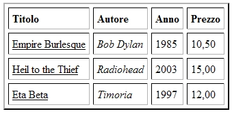

Torna alla pagina di Tecnologie Web
:: Appello d'esame di Tecnologie Web - 08/04/2008 ::
Esercizio 1
Considerando il seguente documento XML:
<?xml version="1.0"
encoding="ISO-8859-1"?>
<elenco>
<cd>
<titolo>Empire Burlesque</titolo>
<autore>Bob Dylan</autore>
<anno>1985</anno>
<prezzo>10,50</prezzo>
</cd>
<cd>
<titolo>Heil to the Thief</titolo>
<autore>Radiohead</autore>
<anno>2003</anno>
<prezzo>15,00</prezzo>
</cd>
<cd>
<titolo>Eta Beta</titolo>
<autore>Timoria</autore>
<anno>1997</anno>
<prezzo>12,00</prezzo>
</cd>
</elenco>
1.a Scrivete un foglio di stile che modifichi la struttura del documento.
SOLUZIONE
Umm...emh...umh...
1.b Scrivete un foglio di stile che permetta di formattare il documento in un formato di visualizzazione.
SOLUZIONE
<?xml version="1.0" encoding="UTF-8"?>
<xsl:stylesheet xmlns:xsl="http://www.w3.org/1999/XSL/Transform" version="1.0">
<xsl:template match="/">
<html>
<head>
<title>Visualizzazione Documento Es1</title>
</head>
<body>
<xsl:call-template name="Visualizzazione"/>
</body>
</html>
</xsl:template>
<xsl:template name="Visualizzazione">
<table border="2" cellpadding="5" cellspacing="5">
<tr>
<td><b>Titolo</b></td>
<td><b>Autore</b></td>
<td><b>Anno</b></td>
<td><b>Prezzo</b></td>
</tr>
<xsl:for-each select="elenco/cd">
<tr>
<td>
<u><xsl:value-of select="titolo"/></u>
</td>
<td>
<i><xsl:value-of select="autore"/></i>
</td>
<td>
<xsl:value-of select="anno"/>
</td>
<td>
<xsl:value-of select="prezzo"/>
</td>
</tr>
</xsl:for-each>
</table>
</xsl:template>
</xsl:stylesheet>
Ecco il risultato a video:

Esercizio 2
Considerando il seguente documento CSS:
p {
text-align: center;
font-family: Georgia, Times, serif;
font-size: 10px;
}
.titolo {
font-size: 20px;
}
.sottotitolo {
font-size: 18px;
font-family: Georgia, Times, serif;
}
div > p {
font-size: 12px;
font-weight: italic;
}
.menu {
border:1px solid #333333;
width: 100%;
padding: 5px;
}
2.a Scrivete un frammento HTML che permetta di attivare tutte le regole di stile descritte.
SOLUZIONE
<!DOCTYPE HTML PUBLIC "-//W3C//DTD HTML 4.01 Transitional//EN"
"http://www.w3.org/TR/html4/loose.dtd">
<html>
<head>
<link type="text/css" rel="stylesheet" href="es2.css">
<title>Documento senza titolo</title>
</head>
<body>
<div class="titolo">
Titolo
</div>
<div class="sottotitolo">
Sottotitolo
</div>
<p>
Paragrafo di prova!
</p>
<div>
<p>
Paragrafo annidato Corsivo!!
</p>
</div>
<div class="menu">
Menu con Bordo Solid!
</div>
</body>
</html>
2.b Citate un tipo di selettore non presente nel documento.
SOLUZIONE
- il selettore per body sicuramente presente in una pagina HTML.
- il selettore che va a considerare ad esempio l'id di un DIV (se presente nella pagina) tramite #nomeId.
- E1 E2 che seleziona ogni elemento E2 discendente di E1.
Esercizio 3
3a. Spiegate la differenza tra gli ambienti GOPHER e WWW.
SOLUZIONE
L'ambiente GOPHER forniva un meccanismo di organizzazione di documenti di testo in gerarchie distribuite su più server.
gopher://gopher.floodgap.com
L'ambiente WWW(world wide web) serve per presentare a schermo i documenti ipertestuali e multimediali. Il punto di forza del WWW è la scalabilità, ottenuta tramite il meccanismo dei link, che semplifica il protocollo e semplifica la navigazione ipertestuale.
Le due componenti principali legate al WWW sono:
- browser(client): permette di visualizzare i documenti.
- server: meccanismo di accesso a risorse locali, in grado di trasmettere via socket TCP documenti identificati da un nome univoco. Può anche collegarsi ad applicazioni lato server(tramite protocollo CGI) agendo da tramite tra il browser e l'applicazione, quindi il browser diventa l'interfaccia dell'applicazione.
3b. Spiegate la differenza tra la versione HTTP 1.0 e 1.1.
SOLUZIONE
Indipendentemente dalla versione e modalità, HTTP è un protocollo stateless, cioè senza gestione dello stato.
Versione HTTP 1.0:
- il protocollo utilizza connessioni non persistenti, quindi ad ogni richiesta del client il server apre una nuova connessione. Questo significa che ogni sessione TCP viene chiusa dopo che il server ha risposto alla richiesta del client.
- ogni richiesta HTTP è preceduta dal 3-way handshake TCP per stabilire una connessione.
- Overhead molto elevato considerando che normali connessioni HTTP sono molto brevi e frequenti.
- viene utilizzata la modalità di autenticazione Basic Authentication Scheme.
Caratteristiche Basic Authentication Scheme: il client si autentica rispetto ad un server attraverso User ID e Password che vengono inviate come un'unica stringa, separate da : e codificate in base64 come parametri dell'Header Field Authorization. La password passa in chiaro ogni volta che è necessario richiedere quella risorsa.
Versione HTTP 1.1:
- il protocollo utilizza connessioni persistenti, quindi richieste e risposte successive fluiscono all'interno della stessa connessione TCP, che non viene chiusa dal server. La connessione TCP viene chiusa dal server a seguito di un time out di inattività.
- introdotti i cookie(file testuale contenente attributi) per poter simulare lo stato di una sessione HTTP. Vengono scambiati tra client e server e contengono sempre almeno un identificatore della sessione del particolare utente. Possono servire per informazioni commerciali(pagine visitate, prodotti cercati...) e per poter effettuare autenticazione senza ripetere il login.
- viene utilizzata la modalità di autenticazione Digest Authentication Scheme.
Caratteristiche Digest Authentication Scheme: aumenta la sicurezza dell'autenticazione HTTP, poiché permette l'invio della password in modo cifrato. I componenti fondamentali sono: una funzione di hash non invertibile(MD5) per impedire che il contenuto codificato possa essere decodificato; un valore (nonce) definito dal server e comunicato al client.
Esercizio 4
Cosa sono le HTTP Servlet? Spiegare i metodi doGet() e doPost().
SOLUZIONE
Le servlet sono codice java utilizzato per generare contenuti dinamici sul Web. Le HTTP Servlet sono servlet che utilizzano metodi specifici per gestire connessioni HTTP. In particolare sono istanze (oggetti) della classe java.servlet.http.HttpServlet che definiscono i metodi per gestire le connessioni HTTP.
Gli obiettivi delle HTTP Servlet sono:
- definire un meccanismo robusto per spedire contenuti ad un client secondo il modello client/server
- generare contenuto dinamico su Web, gestendo sessioni HTTP.
Esistono 7 metodi d’invocazione per una http Servlet.
Due di questi sono:
- doGet() comprende una quantità limitata d’informazione (non più di 255 caratteri) in forma di query string: lista che inizia con ?, seguita da coppie nome-valore.
ad es. /index.html?nome=lara&cognome=dolera&pw=giallo
- doPost() può essere basato su query string; con questo metodo si può spedire una quantità illimitata d’informazione come parte di una richiesta HTTP, senza apparire come parte di URL.
ad es. public void doGet(HttpServletRequest request, HttpServletResponse response).
Esercizio 5
Spiegare cosa sono gli elementi ed i template di una JSP. Quali tipi di elementi conosci?
SOLUZIONE
Le JSP sono formate da codice HTML + frammenti di codice Java. Le componenti di una JSP sono gli elementi ed i template.
I template sono le parti di codice statico.
Gli elementi sono le parti di codice dinamico e si dividono in 3 categorie:
- Elementi di script: metodo più semplice per rendere dinamica una pagina. Si suddivide a sua volta in 3 parti:
- scriptlet: frammenti di codice Java. Definiti <% codice Java%>, adatti per i cicli, condizioni e funzionalità semplici.
- espressioni: stringhe di testo dinamiche. Definite <%= codice Java %>. Qualunque sia il tipo di dati del risultato di un’espressione viene sempre convertito dal metodo toString prima di essere inviato al client.
- dichiarazioni: frammenti di codice Java utilizzato per definire nuovi metodi o variabili globali. Definite da <%! codice Java%>. Vengono eseguite prima di _jspService().
- Direttive: istruzioni per il container che specificano gli aspetti specifici dell’esecuzione di una JSP. Definite da <%@ direttiva attr1="val1",...,attrN="valN" %>. Esempi:
- direttiva page: specifica informazioni relative alla pagina (tipo di contenuto, linguaggio di script, librerie da importare).
- direttiva include: serve per includere testo o codice nella JSP a tempo di traduzione (cioè quando la JSP viene convertita in servlet, quindi prima che venga compilata). Nota: ciò che viene incluso deve far parte della stessa applicazione Web.
- Azioni: servono per linkare codice dinamico. Ad es. <jsp: include page=“page”/>, però a differenza della direttiva include i file sono inclusi in fase di esecuzione, quindi in caso di modifica del file incluso le modifiche apportate vengono visualizzate immediatamente.
In sintesi gli elementi di una pagina JSP:
- Blocchi di codice HTML
- Commenti <%-- --%>
- Scriptlet <% %>
- Espressioni <%= %>
- Dichiarazioni <%! %>
- Direttive <%@ %>
Esercizio 6
Spiegare a cosa serve ed analizzare in maniera dettagliata il seguente codice. Sulla base di quanto scritto in questo codice, scrivere una traccia del file cinema.xml a cui si fa riferimento, inventando i dati per 2/3 esempi di film.
<%@ taglib uri="http://java.sun.com/jsp/jstl/core" prefix="c" %>
<%@ taglib uri="http://java.sun.com/jsp/jstl/xml" prefix="x" %>
<%@ include file="header.jsp" %>
<table class="tabella" >
<tr>
<td class="colonna" >
<%@ include file="menu.jsp" %>
</td>
<td class="colonna1">
<c:set var="fileXML">
<%@ include file="cinema.xml" %>
</c:set>
<x:parse doc="${fileXML}" var="xml"/>
<x:forEach select="$xml/Films/Film">
<x:set var="nodoGenere" select="string(Genere)"/>
<c:if test="${nodoGenere==param.genere}">
<c:set var="controllo" value="true"/>
<x:set var="t" select="string(Titolo)"/>
<br/><br/><br/>
Titolo: <c:out value="${t}"/><br/><br/>
<img src="<x:out select='string(Locandina)'/>"/>
<br/><br/>
<x:forEach select="Attori/Attore">
<x:set var="no" select="string(Nome)"/>
<x:set var="co" select="string(Cognome)"/>
<c:out value="${no}"/> <c:out value="${co}"/>
<br/> <br/>
</x:forEach>
<x:forEach select="Proiezioni/Proiezione">
<x:set var="g" select="string(Giorno)"/>
Giorno:<c:out value="${g}"/><br/><br/>
<x:set var="o" select="string(OrarioInizio)"/>
Ora:<c:out value="${o}"/><br/><br/>
<x:set var="n" select="string(nomeSala)"/>
Sala:<c:out value="${n}"/><br/><br/>
</x:forEach>
</c:if>
</x:forEach>
<c:if test='${controllo != "true"}'>
Nessun risultato trovato!!!
<br/><br/>
</c:if>
</td>
</tr>
</table>
</body>
</html>
SOLUZIONE
Questo pezzo di codice è un file jsp che utilizza le librerie JSTL CORE e XML. Include un header.jsp che avrà un tag <html> di apertura perché in fondo è presente un tag di chiusura </html>. All'inizio include un file menu.jsp all'interno del quale sarà presente una form che richiede l'inserimento del genere di film, scelta che sarà cruciale poi all'interno del documento.
Il documento crea e visualizza una tabella con tutti i dati che rispettano il genere scelto andando a fare un parsing del file cinema.xml. Se non viene trovato un genere corrispondente a quello inserito viene visualizzato il messaggio: "Nessun risultato trovato!!!"
<films>
<film>
<genere>horror</genere>
<titolo>shining</titolo>
<locandina>http://www.mialocandina.it/shining.jpg</locandina>
<attori>
<attore>
<nome>jack</nome>
<cognome>nicholson</cognome>
</attore>
<attore>
<nome>shelley</nome>
<cognome>duvall</cognome>
</attore>
</attori>
<Proiezioni>
<Proiezione>
<Giorno>lunedì
<OrarioInizio>21
<nomeSala>energia
</Proiezione>
</Proiezioni>
<Proiezioni>
<Proiezione>
<Giorno>martedì
<OrarioInizio>23
<nomeSala>fuoco
</Proiezione>
</Proiezioni>
</film>
<film>
<genere>drammatico</genere>
<titolo>qualcuno volò sul nido del cuculo</titolo>
<locandina>http://www.mialocandina.it/cuculo.jpg</locandina>
<attori>
<attore>
<nome>jack</nome>
<cognome>nicholson</cognome>
</attore>
<attore>
<nome>danny</nome>
<cognome>de vito</cognome>
</attore>
</attori>
<Proiezioni>
<Proiezione>
<Giorno>mercoledì
<OrarioInizio>20
<nomeSala>aria
</Proiezione>
</Proiezioni>
<Proiezioni>
<Proiezione>
<Giorno>giovedì
<OrarioInizio>15
<nomeSala>acqua
</Proiezione>
</Proiezioni>
</film>
</films>
Torna alla pagina di Tecnologie Web